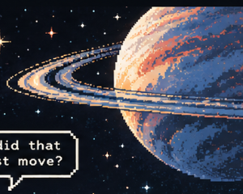
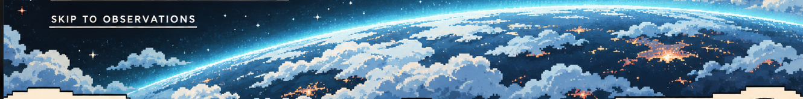

What is SPHEREx?
SPHEREx is a NASA space telescope that surveys the whole sky in infrared light, splitting it into many narrow colours (spectral bands). That lets scientists study what things are made of, not just where they are.



Explore the changing infrared sky. Spot moving objects across time with NASA SPHEREx observations.
Sample / illustrative data in this demo
SPHEREx is a NASA space telescope that surveys the whole sky in infrared light, splitting it into many narrow colours (spectral bands). That lets scientists study what things are made of, not just where they are.
The sky is observed again and again. If an object is in a different place, or a different brightness, from one date to the next, it may be moving or changing. That is a clue worth following.
Step through observations, blink two dates, check how comparable they are, look at an object's infrared spectrum, and ask Navi what you are seeing.
Honest by design. Everything in this demo is sample content that shows how the tools work. Candidates are not discoveries, and nothing here is real SPHEREx data.